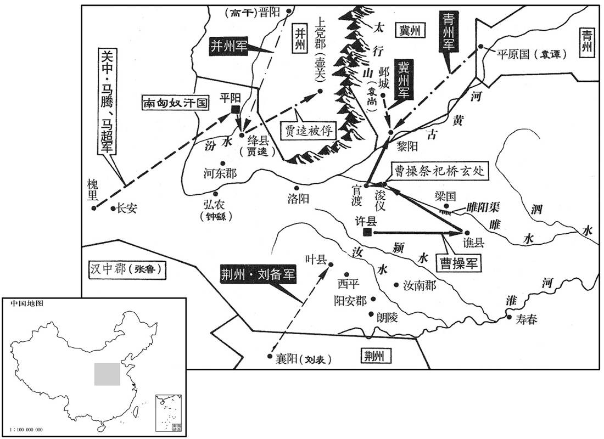

公元202年资治通鉴：本年记事、原文与白话对照
按原书编年位置阅读；追叙和史论不等于本年发生的事件。白话采用所据译本，缺译不以生成译文补齐。
卷64 · 本年记事
公元202年 · 汉孝献皇帝建安七年
七年〔（壬申、二○二）〕
上传原文的注释括号有异常，字符原样保留；无法可靠划分的段落默认全文显示。
本年事件索引（现代整理）
春，正月，曹操军谯，〔谯县，属沛国，操之乡里。〕遂至浚仪，治睢阳渠。〔浚仪县，属陈留郡。睢水于此县首受莨荡渠水，东过睢阳县，故谓之睢阳渠。睢，音虽。治，直之翻。〕遣使以太牢祀桥玄。〔玄识操于微时，故祀之。〕进军官渡。
春季，正月，曹操率军驻在谯县，又进驻浚仪，挖掘睢阳渠。曹操派使者用太牢的规格祭祀已故太尉桥玄。曹军前进到官渡。
初，绍有三子，谭、熙、尚。绍后妻刘氏爱尚，数称于绍，〔数，所角翻。〕绍欲以为后而未显言之。乃以谭继兄后，〔绍本司空逢之孽子，出后伯父成。成盖先有子，死，而绍后之。绍欲废谭立尚，故以谭继兄后。〕出为青州刺史。沮授谏曰：〔沮，子余翻。〕「世称万人逐兔，一人获之，贪者悉止，分定故也。〔慎子曰：兔走于街，百人逐之，贪心俱存，人莫之非者，以兔为未定分也。积兔在市，过而不顾，非不欲兔也，分定之后，虽鄙不争。分，扶问翻。〕谭长子，当为嗣，而斥仗居外，祸其始此矣。」〔谭、尚尚之争，沮授固知之矣。长，知两翻；下同。绍曰：「吾欲令诸子各据一州，以视其能。」于是以中子熙为幽州刺史，〔中，读曰仲。〕外甥高干为并州刺史。〔此皆前事，史因绍死而谭、尚争，书之以先事。〕
两版字句有差异，建议核对原文。
袁绍有三个儿子：袁谭、袁熙、袁尚。袁绍后妻刘氏偏爱袁尚，经常在袁绍面前称赞袁尚。袁绍想让袁尚作自己的继承人，但没有明说，就把长子袁谭过继给自己已死去的哥哥，让他离开邺城，去担任青州刺史。沮援劝阻袁绍说：“世人常说：一万个人追逐一只野兔，一个人捉到后，其他人即使贪心，也全停止下来，这是因为所有权已经确定。袁谭是您的长子，应当做继承人，而您却把他排斥在外，灾祸将由此开始。”袁绍说：“我想让儿子们各自主持一州的事务，以考察他们的能力。”于是，他委派次子袁熙为幽州刺史，外甥高干为并州刺史。
逢纪、审配素为谭所疾，〔逢，皮江翻。〕辛评、郭图皆附于谭，而与配、纪有隙。及绍薨，众以谭长，欲立之。配等恐评立而评等为害，遂矫绍遗命，奉尚为嗣。谭至，不得立，自称车骑将军，〔袁绍初起兵，自称车骑将军，故谭亦称之。〕屯黎阳。尚少与之兵，〔少，诗沼翻。〕而使逢纪随之。谭求益兵，审配等又议不与。谭怒，杀逢纪。秋，九月，曹操渡河攻谭。谭告急于尚，尚留审配守邺，自将助谭，与操相拒。连战，谭、尚数败，退而固守。〔数，所角翻。〕
逢纪、审配一向被袁谭所忌恨，辛评、郭图则拥护袁谭，而与逢纪、审配有矛盾。等到袁绍死后，众人都认为袁谭是长子，打算拥立他继承袁绍。审配等人恐怕袁谭掌权后，会受到辛评等人的报复，就假传袁绍的遗命，尊奉袁尚做袁绍的继承人。袁谭自青州赶来奔丧，不能接替父亲的职位，就自称车骑将军，驻军黎阳。袁尚拨给袁谭很少一部分兵力，而让逢纪去跟随他。袁谭请求再增加兵力，审配等人商议后又予以拒绝。袁诃大怒，杀死逢纪。秋季，九月，曹操渡过黄河，进攻袁谭。袁谭向袁尚求救。袁尚留审配守邺城，亲自率军去救袁谭，与曹操对抗。两军交战数次，袁谭、袁尚连续失败，只好退守营寨。

尚遣所置河东太守郭援，与高干、匈奴南单于共攻河东，发使与关中诸将马腾等连兵，〔使，疏吏翻。〕腾等阴许之，援所经城邑皆下。河东郡吏贾逵守绛，〔绛县，属河东郡，春秋晋所都也。〕援攻之急；城将溃，父老与援约，不害逵，乃降，〔降，户江翻。〕援许之。援欲使逵为将，〔将，即亮翻。〕以兵劫之，逵不动。左右引逵使叩头，逵叱之曰：「安有国家长吏为贼叩头！」〔逵，郡吏，非长吏也。以守绛故，自谓县长吏。为，于伪翻。〕援怒，将斩之，彧伏其上以救之。绛吏民闻将杀逵，皆乘城呼曰：〔呼，火故翻。〕「负约杀我贤君，宁俱死耳！」乃囚于壶关，着土窖中，〔壶关县，属上党郡。着，陟略翻。窖，居效翻；掘地以藏粟之所。〕盖以车轮。逵谓守者曰：「此间无健儿邪，而使义土死此中乎﹖」有祝公道者，适闻其言，乃夜往，盗引出逵，折械遣去，不语其姓名。〔语，牛倨翻。〕
袁尚派遣他所委任的河东郡太守郭援，与高干、匈奴南单于一起进攻河东郡。袁尚又派使者到关中去，与马腾等将领们联系共同起兵，马腾等都暗中答应。郭援率军进攻，一路所经过的县城都被攻下或者归降。河东郡官员贾逵守卫绛县，郭援猛攻不止，城将陷落时，城中父老与郭援约定：不杀害贾逵，他们就投降。郭援答应了。郭援想让贾逵做他的将领，用武力相胁迫，贾逵毫不动摇。左右的人拉贾逵的衣服，让他叩头，贾逵厉声叱责说：“哪有国家官员向贼人叩头的道理！”郭援大怒，就要杀死贾逵，有人伏在贾逵身上，以保护他。绛县的官民们听说要杀死贾逵，都登上城墙，高声喊道：“如果背弃誓言，杀害我们的好长官，宁可大家一起拼死！”于是郭援把贾逵抽到壶关，关在地窖里，用车轮盖住洞口。贾逵对看守们说：“此间难道没有一个英雄好汉，而使义士死在地窖里吗？”有一个叫祝公道的壮士，正好听到贾逵的话，就在夜里前去把贾逵偷偷救出来，打开刑具，放贾逵逃走，没有讲出自己的姓名。
曹操使司隶校尉锺繇围南单于于平阳，〔平阳县，属河东郡。时南单于呼厨泉居之。〕未拔而救〔【章：甲十一行本「救」作「援」；乙十一行本同；孔本同；熊校同。】〕至。繇使新丰令冯翊张既说马腾，〔新丰县，属京兆太守。说，输芮翻。〕为言利害。〔为，于伪翻。〕腾疑未决。傅干说腾曰：「古人有言：『顺德〔【章：甲十一行本「德」作「道」；乙十一行本同；孔本同；熊校同。】〕者昌，逆德者亡。』〔新城三老董公之言。〕曹公奉天子诛暴乱，法明政治，上下用命，可谓顺道矣。〔治，直吏翻。〕袁氏恃其强大，背弃王命，〔背，蒲妹翻。〕驱胡虏以陵中国，可谓逆德矣。今将军既事有道，〔【章：甲十一行本「道」下有「不尽其力」四字；乙十一行本同；孔本同；张校同；退斋校同。】〕阴怀两端，〔谓既附曹公，又与袁氏通也。〕欲以坐观成败；吾恐成败既定，奉辞责罪，，将军先为诛首矣！」于是腾惧。干因曰：「智者转祸为福。今曹公与袁氏相持，而高干、郭援合攻河东，曹公虽有万全之计，不能禁河东之不危也。将军诚能引兵讨援，内外击之，〔谓河东之兵，击之于内，而马腾之兵，击之于外也。〕其势必举。是将军一举，断袁氏之臂，〔断，丁管翻。〕解一方之急，曹公必重德将军，将军功名无与比矣。」腾乃遣子超将兵万余人与繇会。
曹操派司隶校尉钟繇在平阳包围南匈奴单于，未能攻陷，而对方援军已经到达。钟繇派新丰县令、冯翊人张既劝说马腾，为他分析利害。马腾听后，犹豫不决。部下将领傅干对马腾说：“古人说过：‘顺德者昌，逆德者亡。’曹操尊奉天子，平定暴乱，法纪严谨，政治清明，上下听从命令，可以称为顺德；袁氏家话族倚仗势力强大，犯上作乱，勾结匈奴来侵掠中国，可以称为逆德。如今将军已尊奉朝廷，却又暗中骑墙，想坐观成败。我恐怕等到成败定下来之后，曹操奉旨问罪征讨，将军将第一个被杀！”马腾听后十分恐惧。傅干乘机建议说：“明智的人能转祸为福。如今，曹操与袁氏家族相持不下，而高干、郭援合力进攻河东郡，曹操虽然有万全之计，也无为挽救河东郡的危局。将军假如能在此危急关头领军征讨郭援，内外夹击，必能取胜。将军这一举动，既斩断袁氏家族的臂膀，又解救了河东郡的危急，曹操必然深深感激将军，将军的功名将无人能够相比。”于是，马腾派儿子马超率军一万余人与钟繇会合。
初，诸将以郭援众盛，欲释平阳去。锺繇曰：「袁氏方强，援之来，关中阴与之通，所以未悉叛者，顾吾威名故耳。若弃而去，示之以弱，所在之民，谁非寇雠，纵吾欲归，其得至乎！此为未战先自败也。〔言若退师避援，则关中诸将必叛，虽欲归司隶治所，亦不得而至也。〕且援刚愎好胜，必易吾军，〔易，轻也。愎，平逼翻。好，呼到翻。易，以豉翻。〕若渡汾为营，〔水经注：汾水南过平阳县东。〕及其未济击之，可大克也。」援至，果径前渡汾，众止之，不从。济水未半，繇击，大破之。战罢，众人皆言援死而不得其首。援，繇之甥也。晚后，马超校尉南安庞德，于鞬中出一头，〔秦川记曰：灵帝中平五年，分汉阳置南安郡，领豲道、新兴、中陶三县。鞬，居言翻；盛吊矢器。〕繇见之而哭。德谢繇，繇曰：「援虽我甥，乃国贼也，卿何谢之有！」南单于遂降。〔降，户江翻。考异曰：魏志张既传曰：「高干及单于皆降。」非也。〕
起初，将领们看到郭援军势强盛，想放弃平阳离去。钟繇说：“袁氏的势力正强，郭援这次来，关中的势力暗中与他相勾结，他们所以没有全部背叛朝廷，只因为顾虑我的威名罢了。如果弃平阳而离去，向郭援示弱，则各地的百姓都会成为敌人，即使我想回去，又怎么能退得回去呢？这是未作战而先自败退。而且郭援刚愎好胜，必然看不起我军，如果他渡过汾河来扎营，趁他未渡完时，我们突然袭击，可获大胜。”郭援到达后，果然直接前行渡河，部下纷纷劝阻，但郭援不听。当他部下渡过没有一半时，钟繇率军奋击，大破郭援。战斗结束后，钟繇部下诸将都说郭援已被杀死，但没有找到郭援的人头。郭援是钟繇的外甥。后来，马超部下的校尉、南安人庞德从装弓箭的袋子里取出一个人头，钟繇见到后哭了，原来那正是郭援的人头。庞德向钟繇道歉，钟繇说：“郭援虽是我的外甥，但他是背叛朝廷的逆贼，你有什么可道歉的！”南匈奴单于看到援军已败，便投降了。
刘表使刘备北侵，至叶，〔叶县，属南阳郡。春秋楚叶公子高之邑也。叶，之涉翻。〕曹操遣夏侯惇、于禁等拒之。备一旦烧屯去，惇等追之。裨将军巨鹿李典曰：〔裨将军，在偏将军之下。裨，频弥翻。〕「贼无故退，疑必有伏。南道窄狭，〔窄，侧格翻。〕草木深，不可追也。」惇等不听，使典留守而追之，果入伏里，兵大败。典往救之，备乃退。
刘表派刘备向北进攻，到达叶县。曹操派夏侯、于禁等前去抵挡。刘备突然放火烧去自己军营，向后撤退。夏侯等率军追赶。裨将军、巨鹿人李典说：“刘备无故撤退，我怀疑定有埋伏。南边道路狭窄，草木深密，不能追赶。”夏侯等不听，命令李典留守而自己领兵追赶，果然陷入埋伏，大败。李典率军援救，刘备才撤军。
曹操下书责孙权任子，〔任，质任也。操盖以此觇孙权，而观其所以应之。〕权召群僚会议，张昭、秦松等犹豫不决。权引周瑜诣吴夫人前定议，〔吴夫人，权母也。〕瑜曰：「昔楚国初封，不满百里之地。继嗣贤能，广土开境，遂据荆、扬，〔【章：甲十一行本「扬」下有「至于南海」四字；乙十一行本同；孔本同；退斋校同。】〕传业延祚，九百余年。〔周成王封熊绎于楚以子男之田，国于丹阳，汉南郡枝江县是也。其后浸强，至若敖、蚡冒封畛于汝，武王、文王奄有江、汉之间，庄王以后，与中国争盟，威王破越至于南海，及秦而灭，凡九百余年。〕今将军承父兄余资，兼六郡之众，〔父，谓孙坚；兄，谓孙策。六郡，会稽、吴、丹阳、豫章、庐陵、卢江也。〕兵精粮多，将士用命，铸山为铜，煮海为盐，境内富饶，人不思乱，有何逼迫而欲送质﹖〔质，音致；下同。〕质一入，不得不与曹氏相首尾，与相首尾，则命召不得不往，如此，便见制于人也。极不过一侯印，仆从十余人，车数乘，马数匹，岂与南面称孤同哉！〔建安十三年，操自荆州东下约孙权会猎，时周瑜未至，鲁肃说权，其意亦与此同。从，才用翻。乘，绳证翻。〕不如勿遣，徐观其变。若曹氏能率义以正天下，将军事之未晚；若图为暴乱，彼自亡之不暇，焉能害人！」〔此数语，所谓相时而动也。然瑜之言不悖于大义，鲁肃、吕蒙辈不能及也。焉，于虔翻。〕吴夫人曰：「公瑾议是也。公瑾与伯符同年，小一月耳，〔周瑜，字公瑾。孙策，字伯符。瑾，渠吝翻。〕我视之如子也，汝其兄事之。」遂不送质。
曹操发下公文，要孙权派自己的弟弟或儿子到朝廷来作官。孙权召集众官员进行会商，张昭、秦松等人犹豫不决。孙权领周瑜来见自己母亲吴夫人，在她面前作最后决定。周瑜说：“从前，楚国开始受封于周朝时，统治的区域方圆不到一百里。后继的国君贤明能干，开拓疆土，遂占有荆州与扬州，王业相传延续，达九百多年。如今，将军承袭父、兄的基业，拥有六郡的地盘与人力，兵精粮足，将士听命。上山开采铜矿，沿海炼制食盐，境内富庶，人心安定，有什么压力使咱们要送人质？人质一送去，就不能不与曹操紧密联系，既然紧密联系，那么朝廷下令征召时就不能不前往。这样，就会被人所控制。最多不过是得一个侯印，有十几个仆从，几辆车，几匹马，难道与面向南方而称孤道寡相同吗！不如不送人质，慢慢观察事态变化。如果曹操真能以君臣大义来治理天下，将军再侍奉他也不晚。如果他图谋不轨，犯上作乱，他救自己都顾不上，又怎么能害人？”吴夫人对孙权说：“周瑜说得很对。他与你哥哥孙策同年，只小一个月。我把作看作自己的儿子，你要当作哥哥来尊敬他。”因此决定不送人质。
译本中未与胡注本可靠对应的内容
以下另列供核对版本差异，不并入胡注本正文。
译本所附古文
[2]袁绍自军败，惭愤，发病呕血；夏，五月，薨。
译本白话
袁绍自从官渡战败之后，羞愧愤恨，发病吐血。夏季，五月，袁绍去世。